유통 포털 메뉴얼¶
1단계) 유통포털에 로그인¶
유통 포털을 사용하기 위해서는 홈페이지에 로그인 절차를 진행한후에 데이터를 구매해서 오픈랩을 이용 할수 있습니다
로그인을 진행하여 정상적으로 로그인이 되었으면 이제 유통 포털을 이용할 준비가 되었습니다
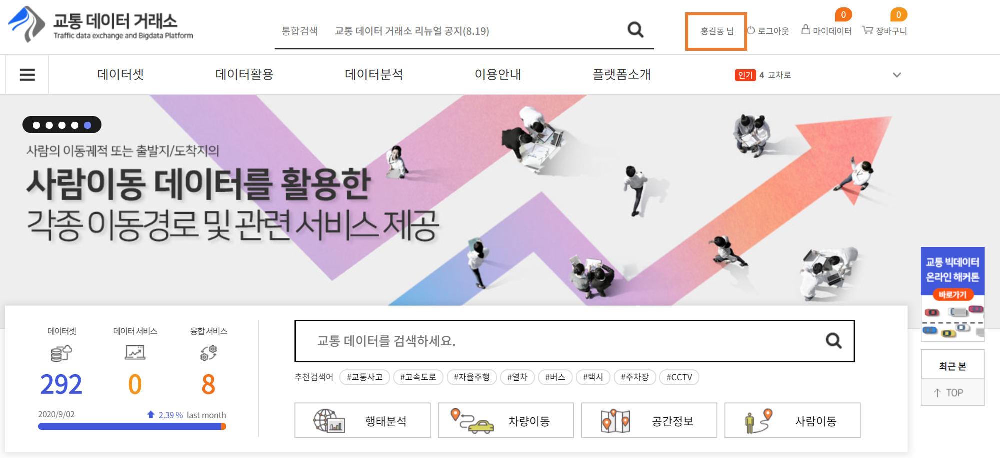계정이 없다면, 위의 회원가입 버튼을 눌러서 회원가입을 진행하실 수 있습니다.
2단계) 데이터 상품 구매¶
데이터 상품을 구매하여, 오픈랩을 이용할 수 있으며
데이터 상품 구매 및 오픈랩 사용방법은 아래 링크를 해주시길 바랍니다.
https://docs.diamond-e.kr/manual/OPENLAB-Tutorial/index.html
3단계) 마이 데이터/장바구니¶
포탈 상위의 마이데이터 버튼을 클릭하면 본인의 마이데이터, 데이터 신청 및 문의내역, 개인정보 관리 창을 볼 수 있습니다.
마이데이터 에서는 본인이 구매한 데이터 목록을 조회할 수 있고, 블록체인 주문내역 그래프를 볼 수 있습니다.
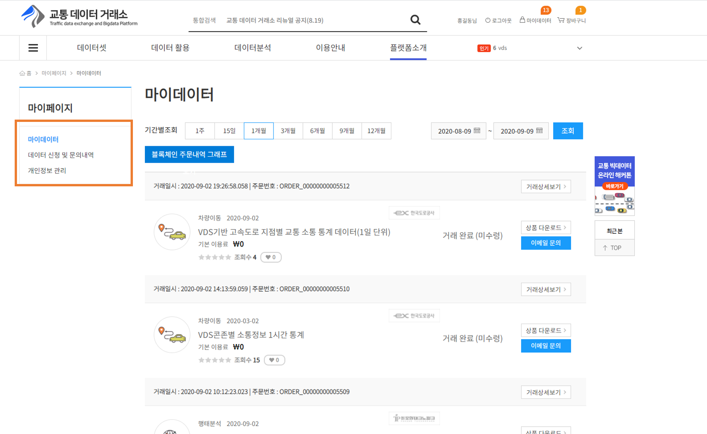 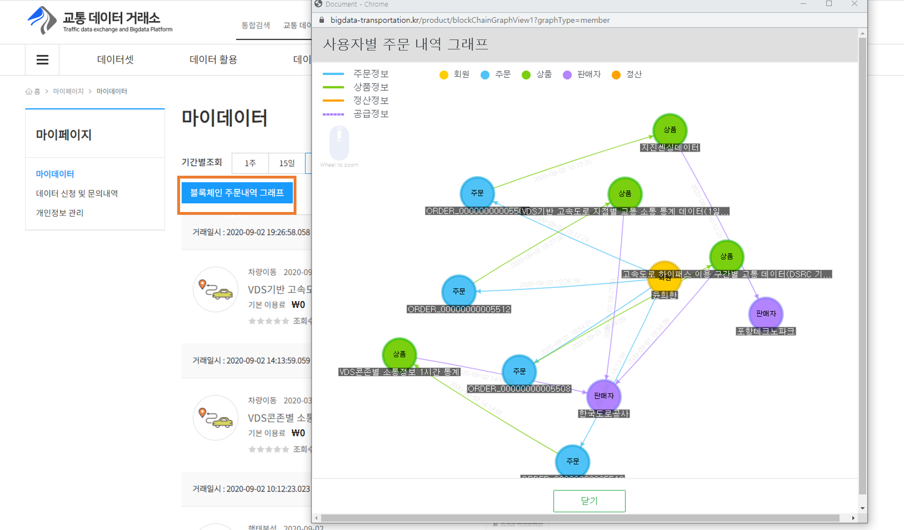데이터 신청 및 문의 내역에서는 본인의 데이터 신청 및 문의내역을 볼 수 있습니다.

개인정보 관리에서 패스워드를 입력하면 개인정보 관리 페이지로 이동합니다.
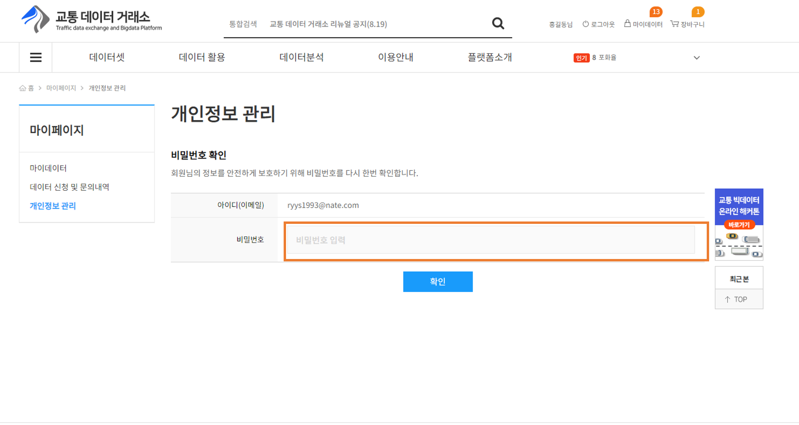개인정보 수정 및 회원 탈퇴 버튼을 이용해서 개인정보를 수정하거나 회원 탈퇴를 할 수 있습니다.

포탈 상위의 장바구니 버튼을 클릭하면 본인이 데이터 상품에서 장바구니에 담아 두었던 상품을 모아 볼 수 있습니다.
주문하기 버튼을 클릭하면 결제하기 페이지로 이동합니다.
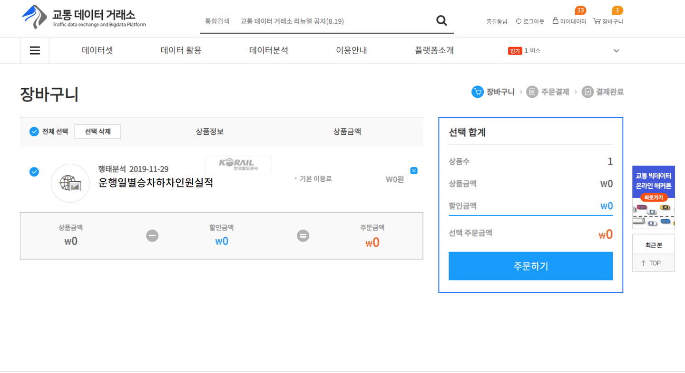4단계) 데이터 활용사례¶
포탈 메뉴의 데이터 활용 버튼을 클릭시 데이터 활용 사례를 모아 볼 수 있습니다.
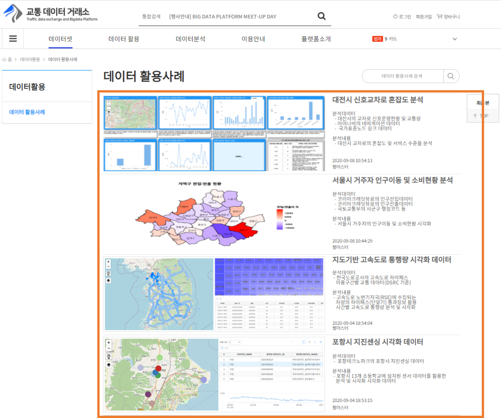5단계) 데이터 분석¶
포탈 메뉴의 데이터 분석 버튼 클릭시 오픈랩 바로가기 및 오픈랩 이용 및 메뉴얼을 볼 수 있습니다.
오픈랩 바로가기는 아래 링크 [ 3단계) 오픈랩실행 ]를 참조해주시길 바랍니다.
https://docs.diamond-e.kr/manual/OPENLAB-Tutorial/index.html
오픈랩 이용 및 메뉴얼은 아래링크를 참조해주시길 바랍니다.
6단계) 이용안내¶
포탈 메뉴의 이용안내 버튼 클릭시 공지사항, FAQ, Q&A, 데이터 신청 및 문의내역, 데이터 신청 및 문의등록, 사이트맵을 볼 수 있습니다.
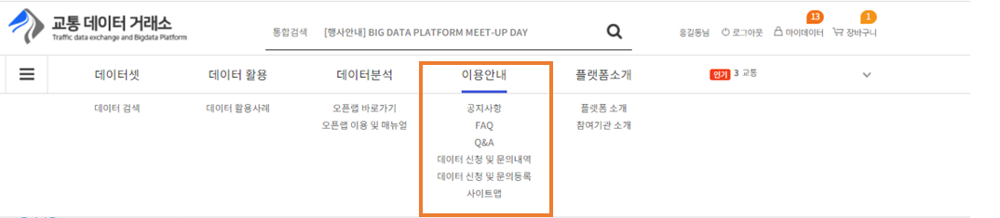공지사항은 관리자가 공지하는 글을 읽을 수 있는 페이지 입니다. ‘구분’ 에 따라 공지, 자료, 데이터 상품 구매, 데이터 활용 사례로 나뉩니다.
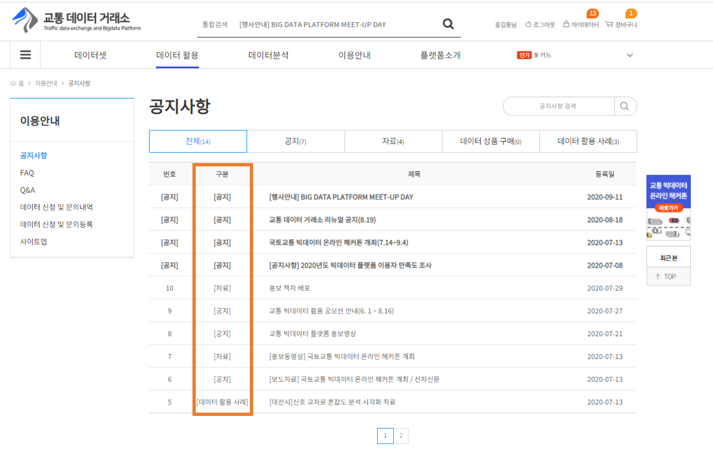공지사항 글을 클릭하면 관리자가 적어놓은 공지사항 글을 읽을 수 있습니다. 이전글, 다음글로 이동이 가능하며 목록버튼 클릭 시 공지사항 글 목록 화면으로 이동합니다.
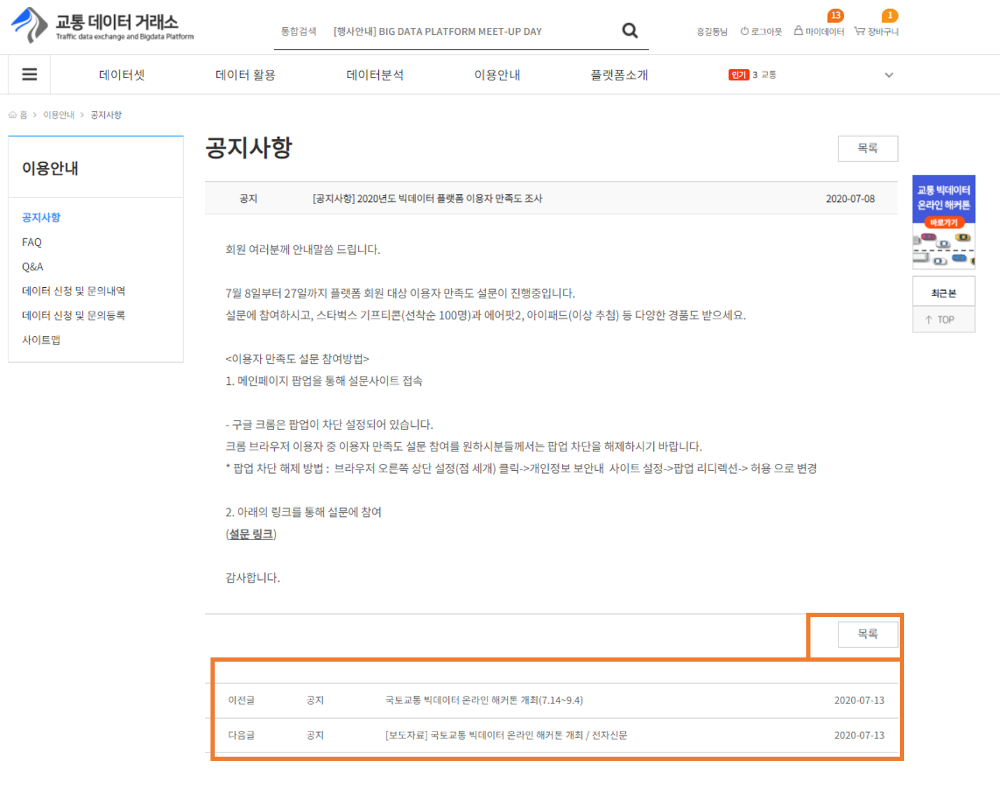FAQ 화면은 사용자들이 자주 묻는 질문들을 볼 수 있습니다.
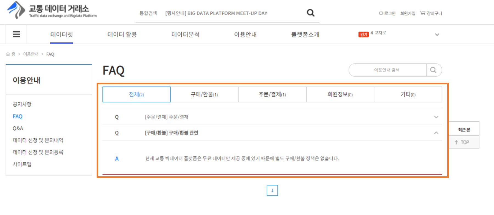Q%A 화면은 사용자들이 질문을 올리면 관리자가 답변을 달 수 있는 페이지 입니다. 이전글, 다음글로 이동이 가능하며 목록버튼 클릭 시 Q&A 글 목록 화면으로 이동합니다.
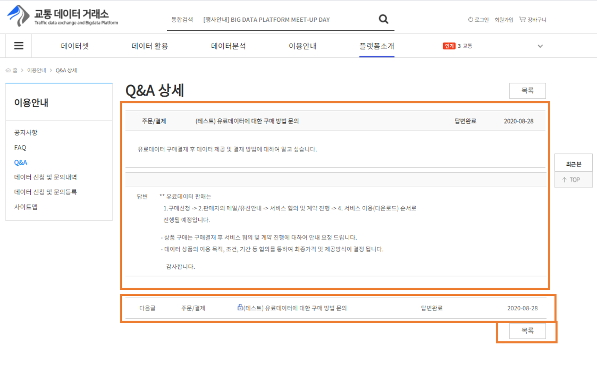데이터 신청 및 문의등록 화면은 사용자가 데이터 신청 및 문의를 등록할 수 있는 페이지 입니다. 상품 카테고리 별로 신청 및 문의를 등록할 수 있으며, 비밀글 여부에서 비밀클 선택시
비밀번호를 입력할 수 있습니다. 파일 업로드를 통해 파일을 첨부할 수도 있으며, 신청 및 문의등록 버튼 클릭시 등록됩니다.
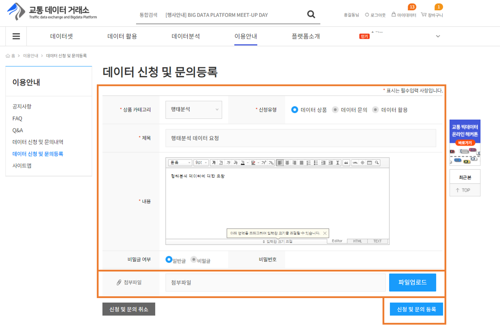데이터 신청 및 문의내역 화면은 사용자가 데이터 신청 및 문의등록 페이지에서 등록한 글을 볼 수 있는 페이지 입니다. 등록 시 비밀글로 등록된 글을 선택시 비밀번호 확인 이라는 팝업창이
뜨며, 등록할 때, 입력한 비밀번호 4자리를 입력시 조회할 수 있습니다.
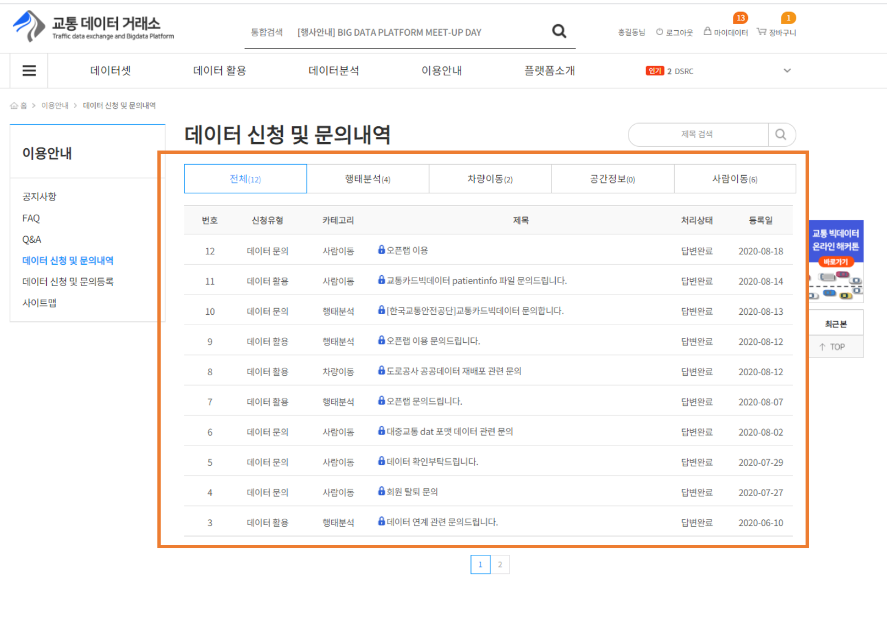
사이트 맵 화면은 교통 데이터 거래소 포털에서 사용하는 메뉴를 모아볼 수 있습니다.
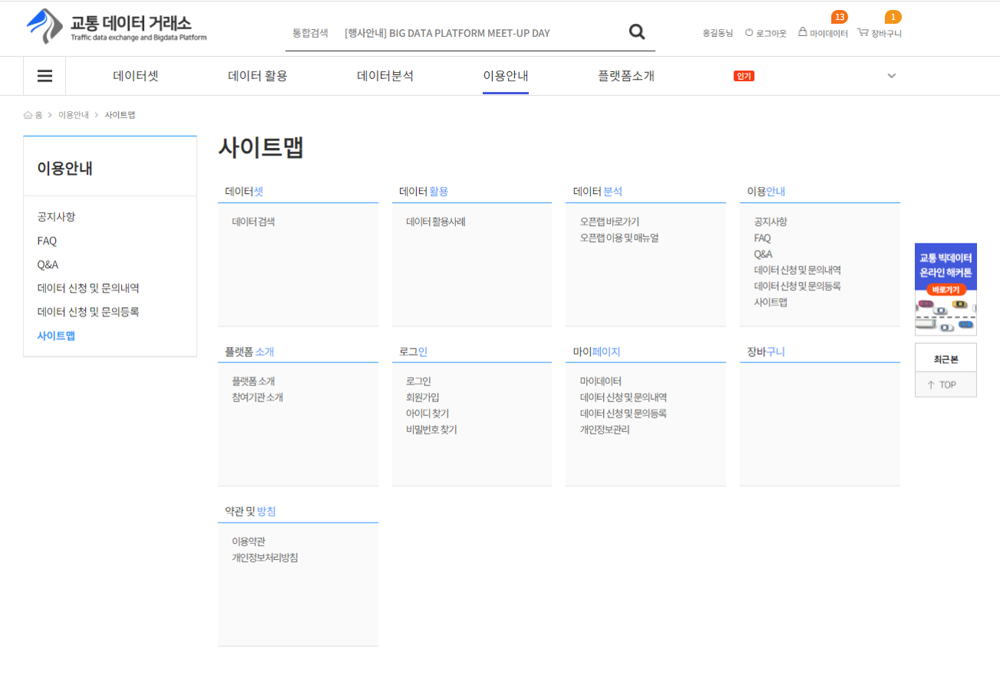7단계) 플랫폼 소개¶
플랫폼 소개 화면은 교통빅데이터 유통 플랫폼을 소개하는 글을 볼 수 있습니다.
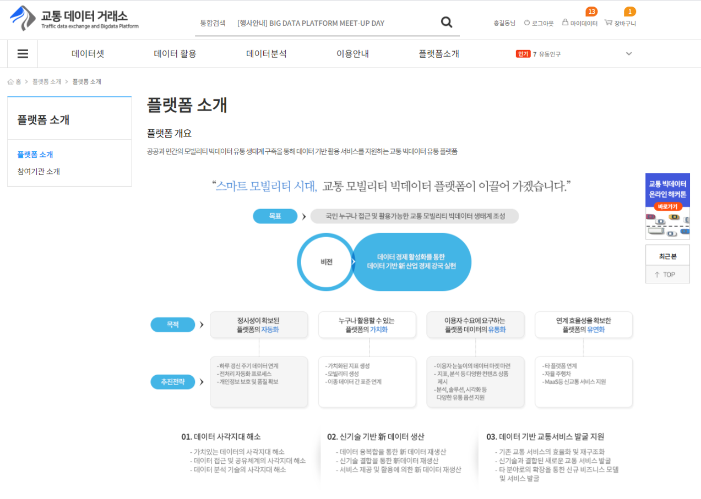참겨기관 소개 화면은 데이터를 판매하는 참여기관을 모아볼 수 있습니다.

각 참여기관 로고 클릭시, 참여기관 소개 글을 볼 수 있으며, 각 참여기관리 판매하는 데이터를 모아볼 수 있습니다.
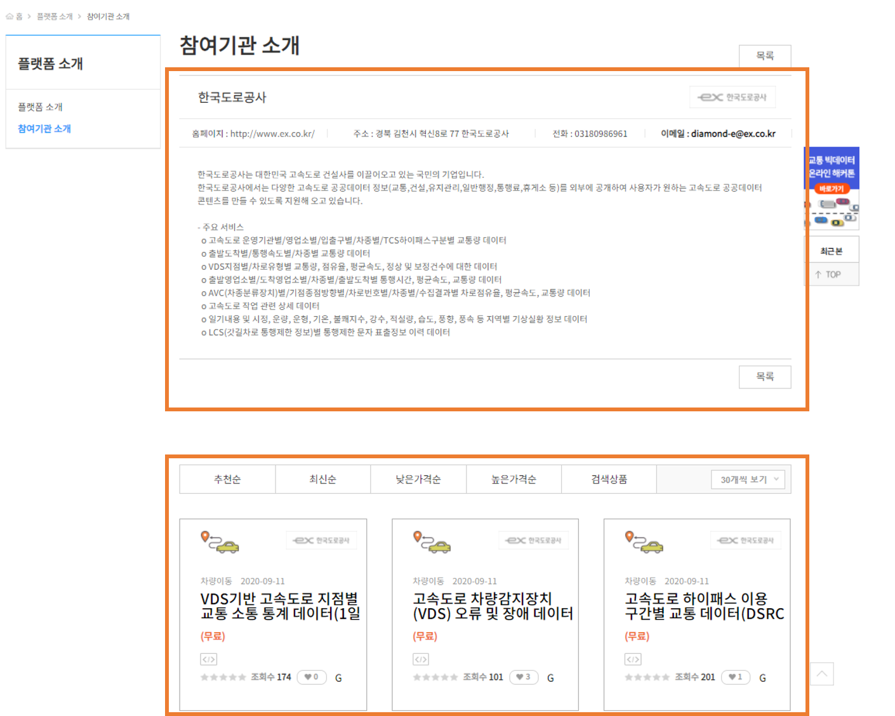